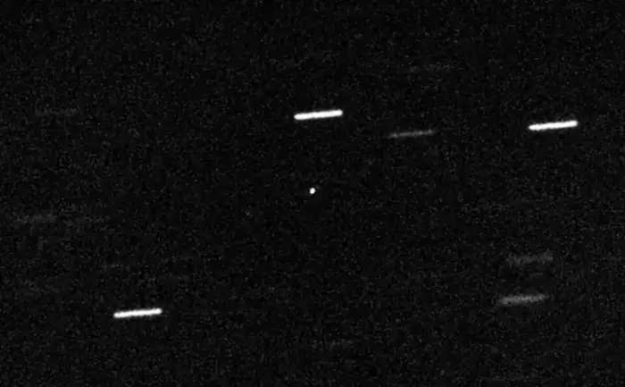
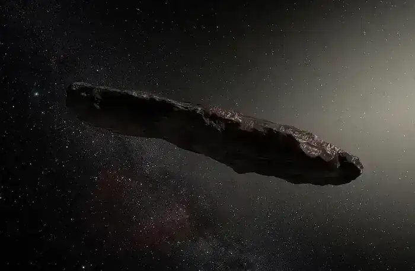

What was actually observed
1I/2017 U1 was discovered by Pan-STARRS in October 2017, already leaving. Its trajectory was hyperbolic — it came from interstellar space and will not return. It brightened and dimmed in a way suggesting an elongated, tumbling body, and spectroscopy showed a reddish surface without the usual cometary coma.
Maps, diagrams and images





The key anomaly is small and real: a non-gravitational acceleration, about 10⁻⁴ m/s², consistent with outgassing — except no gas was detected, and the object's brightness variation implies an extreme shape (very elongated, or a flat sheet).
The natural explanations
A hydrogen iceberg. A body of frozen hydrogen would sublimate at exactly the right rate and produce no visible dust. The proposed formation route — in the dense cores of giant molecular clouds — is plausible, and the model fits the acceleration.
A nitrogen-ice shard. Stripped from the surface of a Pluto-like body, nitrogen ice would also sublimate invisibly and explain the flat, bright shape.
A dust-covered comet or a fractal aggregate, where the outgassing is real but faint, and the odd brightness comes from an unusual geometry.
Avi Loeb argued that a thin artificial sail could produce the same acceleration from radiation pressure alone, without any outgassing. It is a legitimate hypothesis in the narrow sense: it fits some of the data.
It is not the best explanation. It requires an artefact, its predictions were not made in advance, and the natural models that have been developed since fit the same anomaly with known physics. An extraordinary claim needs to beat the alternatives, and it has not.
The lasting value of the episode is procedural: it showed how quickly a small anomaly becomes a story, and how much careful modelling it takes to say 'probably a rock'. The archive's frontier index lists it as a live debate because the composition is genuinely unsettled — not because the artefact reading is.
What would settle it
Nothing can: the object is gone. That is the central frustration. The resolution has to come from statistics — if interstellar objects are common, the next ones can be characterised better. Rubin Observatory is expected to find many more, and a future dedicated intercept mission has been proposed.
So the correct status is: an anomaly with several viable natural explanations, no decisive data, and a famous minority claim that has outrun its evidence.
Sources for this page
- NASA, 1I/2017 U1 (‘Oumuamua) observationsscience.nasa.gov
- Seligman & Laughlin (2020), the hydrogen-iceberg modeliopscience.iop.org
- Desch & Jackson (2021), the nitrogen-ice shard modelagupubs.onlinelibrary.wiley.com
- Wikipedia, “‘Oumuamua” — observations and proposed explanationsen.wikipedia.org
Open resources on this topic
- BookLe Scienze Giugno 2023 Oumuamua (Internet Archive, free to read)
- PapersOpen-access articles: DOAJ · PubMed Central · Internet Archive Scholar
- BooksPublic-domain and borrowable copies: Open Library · Project Gutenberg · Google Books
More images
Cite this page
Momin, S. (2026). ‘Oumuamua. The Larger World Archive. https://drsamonline.github.io/LARGE_GLOBE/oumuamua.htmlMomin, Sohil. “‘Oumuamua.” The Larger World Archive, 2026, https://drsamonline.github.io/LARGE_GLOBE/oumuamua.html.Momin, Sohil. “‘Oumuamua.” The Larger World Archive, 2026. https://drsamonline.github.io/LARGE_GLOBE/oumuamua.html.@misc{oumuamua2026oumuamua,
author = {Momin, Sohil},
title = {‘Oumuamua},
year = {2026},
howpublished = {The Larger World Archive},
url = {https://drsamonline.github.io/LARGE_GLOBE/oumuamua.html},
note = {Last reviewed 20 November 2026}
}Last reviewed 20 November 2026 · Corrections policy · this page is not peer reviewed